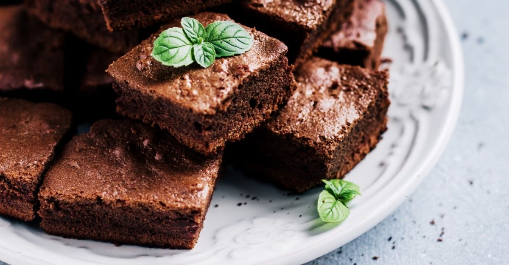

Brownie ya da bizim genel olarak yazdığımız adıyla browni'den bahsedeceğiz bugün. İçerisinde az un olması sebebiyle kıvamı bildiğimiz keklerden ve tatlılardan çok daha farklı. Çikolata tadının buram buram hissedildiği bu enfes tarifin kıvamı hafif nemli olur. Yerken ağızda kuru bir tat bırakmaz. Brownie yapılırken düşülen en büyük hataların başında, harca çok fazla un koymak ve uzun süre pişirmek geliyor. Gelin biz size bu işi püf noktalarıyla güzelce anlatalım. Şimdiden afiyet olsun!
KALORİ:1 porsiyon için 479/kcal
KAÇ KİŞİLİK:8 kişilik HAZIRLAMA SÜRESİ:15 dakika PİŞİRME SÜRESİ:20 dakika
Çikolatayı tereyağının sıcaklığında güzelce eritmeye özen gösterin. Şeker ve yumurtayı çırptıktan sonra eritilmiş tereyağlı çikolatayı içerisine azar azar ilave edin. Harcın içerisine dilerseniz fındık, ceviz, badem gibi kuru yemişlerden ya da vişne, çilek gibi kırmızı meyvelerden ilave edebilirsiniz.
Eğer brownie'nin çok nemli kalmasını istiyorsanız 160 derecede 30 dakikadan daha fazla pişirmeyin. Ancak daha kuru kıvamlı seviyorsanız 35-40 dakika kadar pişirin. Piştikten sonra oda sıcaklığında üzeri hafif çatlamaya devam edecektir.